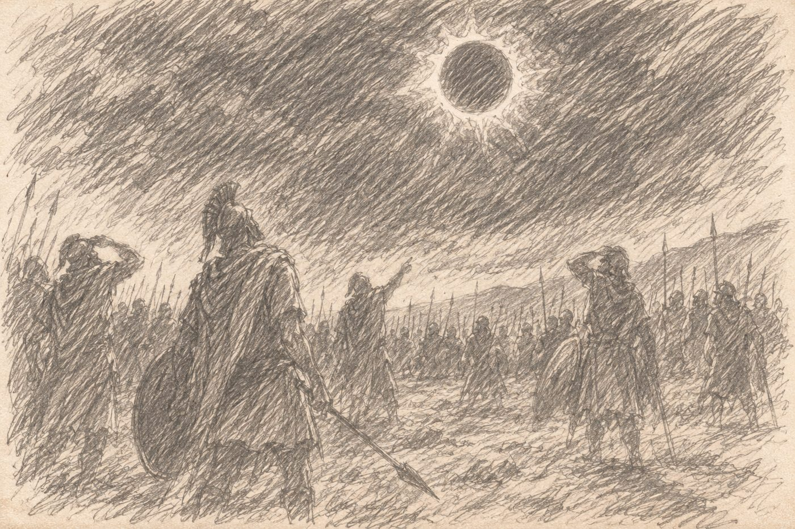

When building their army, each player also builds a Command deck of 6 Command cards. Players show each other their full Command decks before the game, and are encouraged to note which cards their opponent could have, since some cards can counter others. Command cards can change the course of a battle, and some place terrain on the battlefield before deployment. After the Major Terrain's type and location have been chosen (see Major Terrain), and before deployment, each player secretly picks 3 of their 6 cards as their hand. The other 3 cards stay face down for the rest of the game and cannot be played, but some abilities, such as the Birdmaster’s, let an opponent look at them.

Building a Command deck. Each card states how many copies of it a deck may hold: generic cards allow up to 3, and faction cards 1. Faction cards may only go in their own army’s deck.
Each Command card says when it can be played. If it doesn’t, it may be played at the start or end of any Phase except the End of the Round, or between any two unit activations. Once played, its effect lasts as long as the card says.
Ongoing cards and terrain. A card marked Ongoing, and any card that places a terrain feature, stays face up in front of the player who played it for as long as its effect lasts, or for the rest of the game for terrain. This shows everyone whose card it is: on these cards, “your” and “friendly” mean the units of the player who played it.
Some cards are marked Weather. A Weather card may only be played during the End of the Round Phase of a round in which you had the Initiative (you were first in Initiative order that round), and its effect lasts through the following round. Only one Weather card can be in effect at a time: playing a new one ends the old one. Weather affects both armies alike, so play it when the conditions favor your army more than your opponent’s.